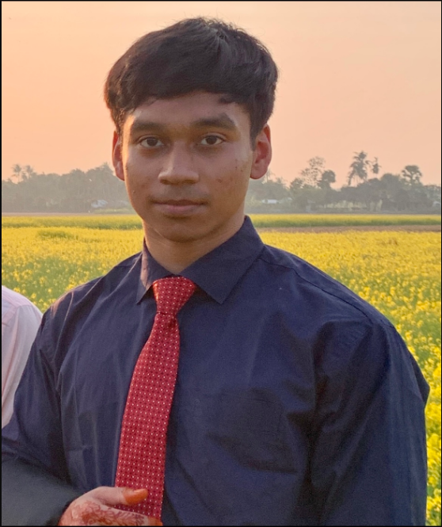

Virginia Tech Student
Naymur Ali
About Me

I’m a full-time college student at Virginia Tech. I recieved my Associates in Engineering from Northern Virginia Community College and now I am pursuing a Bachelor's in Computer Science.
Work Experience
I've worked part-time at TTM Technologies for three years. From my job, I've learned to read and understand various types of circuit board blueprints, operate MicroVu and Optek machinery, and program new jobs. I also know how to program in Java, and have learned the basics of Python and HTML.
for three years. From my job, I've learned to read and understand various types of circuit board blueprints, operate MicroVu and Optek machinery, and program new jobs. I also know how to program in Java, and have learned the basics of Python and HTML.
Goal
My primary goal is to complete my CS major and earn my degree. During this process, I aim to secure internships that will provide practical experience and enhance my resume for post-graduation job opportunities. Ultimately, I plan on landing a fulfilling and rewarding job in the field of Computer Science.
Contact
You can reach out to me through my student email naymur@vt.edu